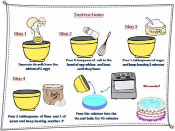

# Week 2 ## Chapter 7 - Arrays and the ArrayList Class --- ### Weekly Structure: - Lecture with Coding Demo - Quiz/Knowledge Check - Short Break - Labs - Group Discussions - Recap and Q&A Session --- ### Objectives By the end of this class, you should be able to answer the following questions: 1. What are data structures, and why are they important? 2. What is an array, and how is it structured in memory? 3. How do you declare, initialize, and access elements in a one-dimensional and two-dimensional array? 4. What are some common operations that can be performed on arrays, such as iteration, searching, and sorting? 5. How does the ArrayList class in Java differ from standard arrays? 6. What are the benefits and limitations of using arrays and ArrayLists? --- ## What is a Data Structure? - A specialized format for organizing, processing, retrieving, and storing data. - Think of it as a system or method to keep track of information so that it's easy to find, update, or delete when needed. - Think of it as a blueprint or a framework that allows data to be stored in a way that is both efficient and easy to work with. - Common Data Structures: Arrays, Lists, Stacks, Queues, Trees, Graphs, etc. --- ### Real-Life Example: The Bookshelf Imagine you have a bookshelf full of books. The bookshelf itself is the data structure because it provides a framework to store your books (the data). Now, just like in programming, you can organize the books in different ways, and each way corresponds to a different type of data structure. <div style="display: flex; align-items: flex-start;"> <div style="flex: 1; padding-right: 2pt;"> <ul style="font-size: 24pt;"> <li> Bookshelf: The structure that holds the books. In programming, this is like an array, a list, or another data structure that stores data. </li> <li> Books: The individual items being stored, representing the data. In programming, this could be numbers, words, or other pieces of information.</li> <li> Organization: The way you decide to arrange the books, such as putting all books of a certain genre together, is like different types of data structures (arrays, linked lists, etc.). Each type of organization provides unique advantages depending on how you want to store and retrieve your data. </li> </ul> </div> <div style="flex: 0 600px;"> </div> </div> Each method of organizing the books provides a different way to efficiently store and retrieve the books (data). For example, a bookshelf organized by genre is like using a hashmap where books are categorized by their genre. The structure is the same (the bookshelf), but the way the data is organized changes based on how you intend to use it. --- ### Why is this Important? Data structures are essential in computer science because they help in storing data in ways that make it easier to use. For example: - *Fast Searching*: If data are organized, you can find what you need quickly. Imagine trying to find a book on a shelf where all the books are randomly placed—that would take a lot of time! - *Efficient Storage*: Some data structures help in storing data in a way that uses less memory, which is crucial when dealing with large amounts of data. - *Easy Updates*: Just like how you can easily add or remove a book from a well-organized bookshelf, data structures help in efficiently adding, removing, or updating information. <iframe width="560" height="315" src="https://www.youtube-nocookie.com/embed/bum_19loj9A?si=6_i1zuFKh8ZsMXfq&start=15&end=470&rel=0" frameborder="0" allow="accelerometer; autoplay; clipboard-write; encrypted-media; gyroscope; picture-in-picture" allowfullscreen" frameborder="0" allow="accelerometer; autoplay; clipboard-write; encrypted-media; gyroscope; picture-in-picture" allowfullscreen></iframe> --- ## What is an Algorithm? - An algorithm is a step-by-step procedure or set of rules to solve a specific problem or perform a task. - Think of it as a recipe or a series of instructions that you follow to achieve a desired outcome. - Algorithms are the backbone of computer programming; they tell the computer how to process data and make decisions. --- ### Real-Life Example: Imagine you want to bake a cake. The recipe you follow is like an algorithm: <div style="display: flex; align-items: flex-start;"> <div style="flex: 1; padding-right: 2pt;"> <ul style="font-size: 24pt;"> <li> Gather Ingredients: You need flour, sugar, eggs, and other items before you can start. </li> <li> Follow Steps: The recipe gives you specific steps to combine the ingredients, bake the mixture, and eventually produce a cake. </li> <li> Desired Outcome: If you follow the recipe correctly, you end up with a delicious cake. </li> </ul> </div> <div style="flex: 0 400px;">  </div> </div> Similarly, in programming, an algorithm is a set of instructions that guides the computer in solving a problem or performing a task. Each step in the algorithm brings you closer to the solution, just like each step in a recipe brings you closer to the finished dish. --- ### Why is this Important? Algorithms are crucial in computer science because they form the logic behind how software and programs operate. For example: - *Efficiency*: The efficiency of an algorithm determines how quickly it can solve a problem or complete a task. - *Problem-Solving*: Algorithms provide systematic ways to approach complex problems, breaking them down into manageable steps. - *Automation*: By defining clear instructions through algorithms, we can automate tasks that would be tedious or impossible for humans to do manually. --- ## Understanding Arrays and ArrayList --- ### What is an Array? - An array is a data structure that allows you to store fixed number of values of the same type in a single variable. - Think of an array as a row of lockers in a school, where each locker can hold one item, and each locker is identified by its own unique number (index).  --- ### Declaring and Initializing Arrays - To declare an array in Java: ```java int[] numbers; ``` - To initialize the array: ```java numbers = new int[5]; // Creates an array of 5 integers ``` - Arrays can also be initialized at the time of declaration: ```java int[] numbers = {1, 2, 3, 4, 5}; ``` --- ### Memory and Arrays: How Arrays Relate to Memory - Arrays are stored in contiguous memory locations. This means that the elements of the array are placed next to each other in memory. - This allows for quick access to any element in the array by using its index. - However, this also means that arrays have a fixed size that must be defined when the array is created. ```java int[] numbers = {10, 20, 30, 40, 50}; ``` - `numbers[0]` might be at memory address `0x0010`. - `numbers[1]` would then be at 0x0014 ==> `0x0010+(4*1)` if each int is 4 bytes long (which is typical for a 32-bit integer). - This is why arrays index starts at 0, `0x0010+(4*2)` , `0x0010+(4*3)`, ... --- ### Single-Dimensional Arrays ```java int[] numbers = new int[5]; // Declaration and Initialization(heap memory allocation) numbers[0] = 10; // Assigning values to array elements ``` ```java int[] numbers = {10, 20, 30, 40, 50}; System.out.println(numbers[2]); // Outputs: 30 ``` --- ### TWO And Multidimensional Arrays - Arrays can have more than one dimension. The most common is a two-dimensional array (like a matrix): think of as grid or table with rows and columns. ```java int[][] array = new int[3][3]; // Creates a 3x3 array with all elements initialized to 0. ``` ```java //the array with predefined values: int[][] matrix = { {1, 2, 3}, {4, 5, 6}, {7, 8, 9} }; System.out.println(matrix[1][2]); // Outputs: 6 ``` - Three-dimensional arrays are also possible: ```java int[][][] threeDArray = new int[3][3][3]; ``` - Matrices are useful for mathematical computations, image processing, and more, like GPT can be thought of as utilizing arrays of arrays (matrices) to process large datasets efficiently. --- ### Array Operations Accessing Array Elements ```java //Use the index to access specific elements: int firstNumber = numbers[0]; // Access the first element //Iterating over an array: for (int i = 0; i < numbers.length; i++) { System.out.println(numbers[i]); } ``` Searching for an element: ```java int searchValue = 30; boolean found = false; for (int i = 0; i < numbers.length; i++) { if (numbers[i] == searchValue) { found = true; break; } } ``` Sorting an array: ```java Arrays.sort(numbers); ``` --- #### What is an ArrayList? - An `ArrayList` is a resizable array, part of Java’s `java.util` package. - Unlike standard arrays, ArrayLists are dynamic arrays that can resize themselves as needed. While arrays have a fixed size, ArrayLists can grow or shrink dynamically. - `ArrayList` can only hold objects, meaning primitive types must be wrapped (e.g., `Integer` instead of `int`). ```java ArrayList<String> names = new ArrayList<>(); names.add("Alice"); names.add("Bob"); ArrayList<Integer> list = new ArrayList<>(); list.add(10); list.add(20); System.out.println(list.get(1)); // Outputs: 20 ``` --- ### Common Operations with ArrayLists Adding Elements ```java names.add("Charlie"); ``` Accessing Elements ```java String name = names.get(0); // Retrieves the first element ``` Removing Elements ```java names.remove("Alice"); ``` --- ### Array vs. ArrayList | Feature | Array | ArrayList | |---|---|---| | Fixed size | Yes | No | | Performance | Generally faster for basic operations | Slower for basic operations due to dynamic resizing | | Flexibility | Less flexible | More flexible | | Usage | When the size is known upfront | When the size is unknown or can vary | --- ### Array Operations - <span class="fragment">Selection Sort: A simple, yet inefficient sorting algorithm.</span> ```java for (int i = 0; i < arr.length - 1; i++) { int minIndex = i; for (int j = i + 1; j < arr.length; j++) { if (arr[j] < arr[minIndex]) { minIndex = j; } } int temp = arr[minIndex]; arr[minIndex] = arr[i]; arr[i] = temp; } ``` --- - <span class="fragment">Bubble Sort: Another simple algorithm that repeatedly steps through the list, compares adjacent elements, and swaps them if they are in the wrong order.</span> ```java for (int i = 0; i < arr.length - 1; i++) { for (int j = 0; j < arr.length - i - 1; j++) { if (arr[j] > arr[j + 1]) { int temp = arr[j]; arr[j] = arr[j + 1]; arr[j + 1] = temp; } } } ``` --- - <span class="fragment"> Binary Search: </span> ```java int operation(int[] arr, int key) { int left = 0, right = arr.length - 1; while (left <= right) { int mid = left + (right - left) / 2; if (arr[mid] == key) return mid; if (arr[mid] < key) left = mid + 1; else right = mid - 1; } return -1; // Key not found } ``` --- ### Knowledge Check Quizzes 1. True or False: Arrays in Java are zero-indexed, meaning the first element is at index 1. <span class="fragment"> False </span> 2. True or False: The length of an array can be changed after it is created. <span class="fragment"> False </span> 3. True or False: Arrays in Java can store elements of different data types. <span class="fragment"> False </span> 4. True or False: The `ArrayList` class in Java automatically resizes when elements are added or removed. <span class="fragment"> True </span> 5. True or False: The length of an array is stored in a property called `size()`. <span class="fragment"> False (The correct property is `length`) </span> --- 6. Which of the following is the correct way to declare an array of integers in Java? - a) `int[] numbers = new int[5];` - b) `int numbers = new int[5];` - c) `int[] numbers = {1, 2, 3, 4, 5};` - d) Both a and c. <span class="fragment"> d) Both a and c </span> --- 7. Which of the following statements about ArrayLists is true? - a) ArrayLists have a fixed size. - b) ArrayLists cannot store primitive types. - c) ArrayLists can grow and shrink dynamically. - d) ArrayLists do not provide any methods to remove elements. <span class="fragment"> c) ArrayLists can grow and shrink dynamically. </span> --- 8. What is the default value of an integer array element in Java? - a) 0 - b) 1 - c) null - d) Undefined <span class="fragment"> a) 0 </span> --- 9. Which method is used to add an element to an `ArrayList`? - a) `add()` - b) `insert()` - c) `append()` - d) `push()` <span class="fragment"> a) `add()` </span> --- 10. Which of the following is a correct way to initialize a two-dimensional array in Java? - a) `int[][] matrix = new int[3][3];` - b) `int matrix[3][3];` - c) `int[] matrix = new int[3][3];` - d) `int[3][3] matrix;` <span class="fragment"> a) `int[][] matrix = new int[3][3];` </span> --- 11. How do you determine the number of elements in an `ArrayList`? - a) `size()` - b) `length()` - c) `count()` - d) `capacity()` <span class="fragment"> a) `size()` </span> --- 12. Which of the following statements is true about arrays and ArrayLists? - a) Arrays can store different data types, while ArrayLists cannot. - b) Arrays are dynamic, while ArrayLists have a fixed size. - c) Arrays are zero-indexed, while ArrayLists are one-indexed. - d) Arrays have a fixed size, while `ArrayList` can dynamically resize. <span class="fragment"> d) Arrays have a fixed size, while `ArrayList` can dynamically resize. </span> --- 13. Which method removes an element from an `ArrayList` by its index? - a) `remove()` - b) `delete()` - c) `pop()` - d) `clear()` <span class="fragment"> a) `remove()` </span> --- 14. Which of the following is the correct syntax for accessing the second element in an array called `numbers`? - a) `numbers[1]` - b) `numbers[2]` - c) `numbers.get(2)` - d) `numbers{1}` <span class="fragment"> a) `numbers[1]` </span> --- 15. What will happen if you try to access an array index that is out of bounds? - a) The program will return `null`. - b) The program will throw an `ArrayIndexOutOfBoundsException`. - c) The program will ignore the access. - d) The program will access the first element instead. <span class="fragment"> b) The program will throw an `ArrayIndexOutOfBoundsException`. </span> --- 17. Which method would you use to check if an `ArrayList` is empty? - a) `isEmpty()` - b) `size() == 0` - c) `length == 0` - d) `null` <span class="fragment"> a) `isEmpty()` </span> --- 18. Which of the following can be used to loop through all elements in an array? - a) `for` loop - b) `while` loop - c) `foreach` loop - d) All of the above <span class="fragment"> d) All of the above </span> --- 19. The ________ keyword is used to create a new instance of an array in Java. <span class="fragment"> b) `new` </span> 20. When an array is passed to a method in Java, the method receives a ________ to the original array, allowing it to modify the array's elements directly. <span class="fragment"> c) reference (understand passing by reference vs passing by value) </span> --- # Labs ---